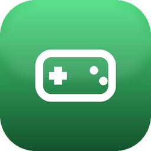
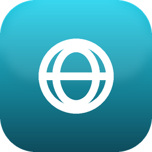

Handy · Lautstärke-Overlay (ohne Seitenwechsel)



SpotifyWindows-Lautstärke
62%
−
🔇
+
Handy quer · Live-Status & Technik
FPS
144
1% Low 118 · Limiter aus
GPU / CPU
62 %GPU 68 °C
41 %CPU
Streams
BildschirmfreigabeDiscord · aktiv
AufnahmeOBS · läuft
Zuschauer128
Audio
Spotify62 %
Discordstumm
Mikrofonan